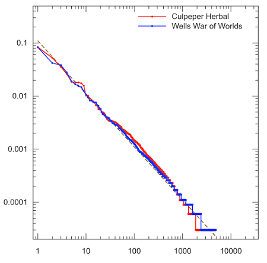
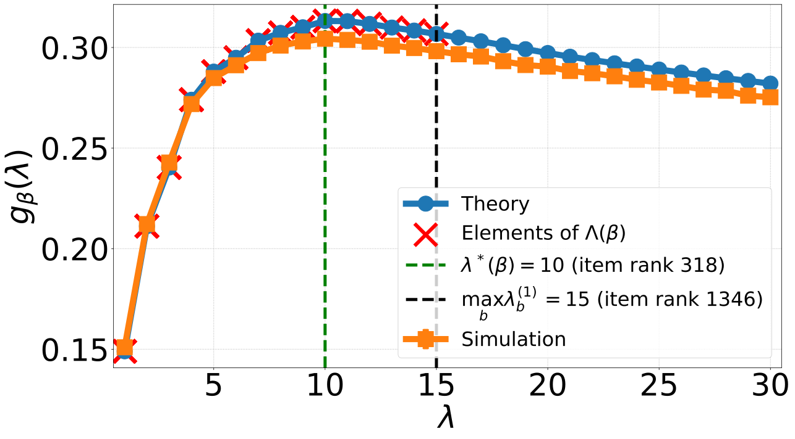
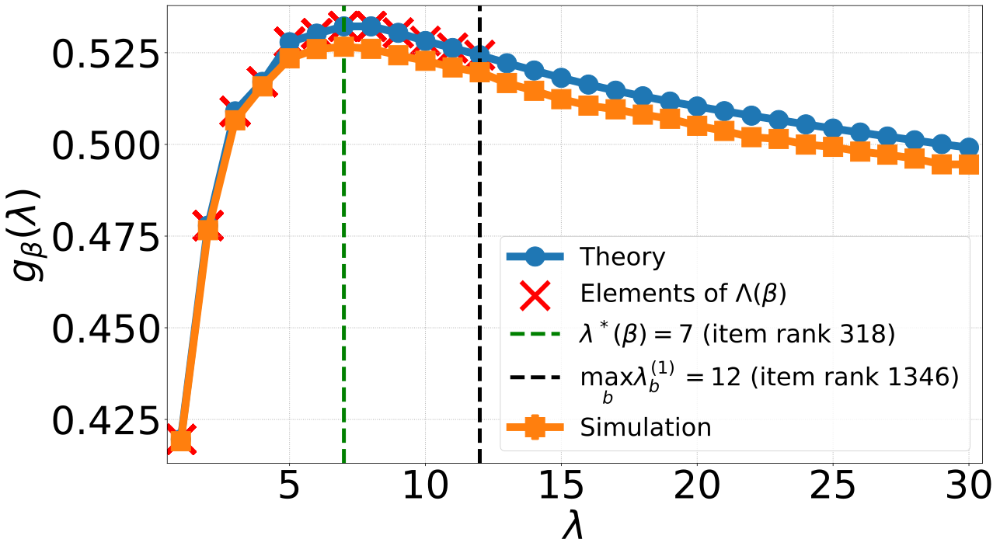
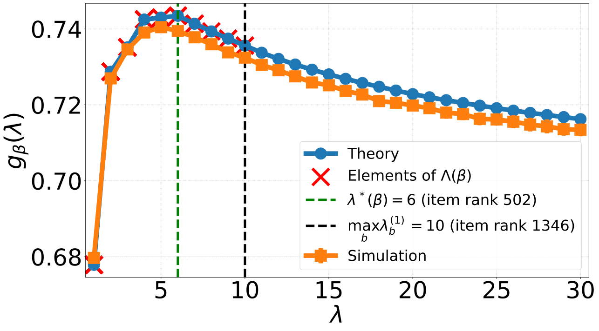

Counting in streams using the Elastic Sketch
Vinay Kumar B. R.
Joint work with
Younes Ben Mazziane (U.of Avignon, France) & Othmane Marfoq (Meta)
Dept. of IEOR, IIT Bombay
Nov 4, 2026

Motivation: Real-World Streams
Streaming Services (Netflix, Instagram)
User Clickstreams & Log Events
Assembly line & Financial transactions

Sensor Signals & Payments
LLM tokenizers

Learn frequency of words while tokenization
Network Packet Tracing

(SrcIP, DstIP, Bytes), DDoS attacks
Goal: Want to count events related to the streaming data.
The Stream Counting Problem
Audience Exercise: Keep an exact mental tally of arriving items!
- Massive Stream: Universe of items \(\mathcal{I}\) of size \(n_{\mathcal{I}}\).
- Resource Constraints: Memory budget \(m \ll n_{\mathcal{I}}\) with ultra-fast \(O(1)\) update time.
Goal: Want to compute functions / statistics of events related to the streaming data with limited memory.
Streaming Model
- Universe of items \(\mathcal{I}\) of size \(n_{\mathcal{I}}\).
- Stream \(\mathbf{R} = (R_1, R_2, \dots, R_{t}, \dots)\) where \(R_t \in \mathcal{I}\).
- Probability vector \(p = (p_1, p_2, \dots, p_{n_{\mathcal{I}}})\), where \(p_i\) is the probability of item \(i\) in the stream.
- Frequency vector \(\mathbf{N}(t) = (N_1(t), N_2(t), \dots, N_{n_{\mathcal{I}}}(t))\), where \(N_i(t)\) is the number of occurrences of item \(i\) in the stream up to time \(t\).
Goal: Find the frequency vector \(\mathbf{N}(t)\) or its functions (e.g., top-\(k\) items, heavy hitters, etc.) using limited memory \(m \ll n_{\mathcal{I}}\).
Fact: To exactly find \(\mathbf{N}(t)\), we need \(m=\Omega(n_{\mathcal{I}})\) memory.
Approximate Counting
- Use sublinear memory \(m \ll n_{\mathcal{I}}\) to maintain an approximate frequency vector \(\hat{\mathbf{N}}(t)\).
- Guarantee: \(|\hat{N}_i(t) - N_i(t)| \le \Delta \) for all \(i\).
- Approximation: Recovery up to some additive error.
Known Fact: To find \(\mathbf{N}(t)\) up to an additive error using a deterministic algorithm, we need \(m=\Omega(n_{\mathcal{I}})\) memory.
Some fixes
Top-K methods
Focus on maintaining accurate counts for the top-k items.
Randomized algorithms
Use randomization to reduce memory requirements.
Probabilistic guarantees
\(|\hat{N}_i(t) - N_i(t)| \le \epsilon t\) with probability \(1-\delta\).
Misra-Gries (1982): Counter-Based Algorithm
Identify top-\(k\) items.
- Match: If item is in a slot \(\implies\) increment its counter.
- Empty Slot: If space remains \(\implies\) insert item with count 1.
- All Slots Full & New Item Arrives: Decrement ALL counters by 1 and evict any item reaching count 0!
Misra-Gries (1982): Counter-Based Algorithm
Identify top-\(k\) items.
- Match: If item is in a slot \(\implies\) increment its counter.
- Empty Slot: If space remains \(\implies\) insert item with count 1.
- All Slots Full & New Item Arrives: Decrement ALL counters by 1 and evict any item reaching count 0!
Some observations
- Undercounts: The estimate never exceeds the true frequency.
- Estimate bound: For a stream of length \(t\), \(N_i - \frac{t}{k+1} \le \hat N_i \le N_i\).
- Not all counts are tracked: Only the \(k\) current candidates have counters; untracked items have estimate 0.
- Non-parallelizable: For two streams, non trivial merging is required.
Count-Min Sketch (CMS): Sketching Algorithm (2005)
Algorithm Overview
Uses a 2D array \(C\) of size \(d \times w\) counters driven by \(d\) independent hash functions \(h_1, \dots, h_d \in [w]\).
- Update: For item \(x\), increment \(C[j, h_j(x)] \gets C[j, h_j(x)] + 1\) for all \(j \in [d]\).
- Point Query: \(\hat{N}_x = \min_{j=1 \dots d} C[j, h_j(x)]\).
Hash Mappings \(h_j(\text{item}) \in \{0, 1, 2, 3\}\)
| Item | \(h_1\) | \(h_2\) | \(h_3\) |
|---|---|---|---|
| ● Red Circle | 1 | 3 | 0 |
| ■ Blue Square | 0 | 1 | 2 |
| ▲ Green Triangle | 2 | 0 | 3 |
| ★ Yellow Star | 3 | 2 | 1 |
| ◆ Pink Diamond | 1 | 0 | 2 |
Counter-Based vs. Sketch-Based Methods
Counter-Based Methods (Misra–Gries)
- Deterministic algorithm
- Accurate count estimates for top-\(k\) items using \(O(k)\) space.
- Results in underestimates \(N_x-\frac{t}{k+1}\le \hat{N}_x\le N_x\)
Sketch-Based Methods (CMS)
- Randomised algorithm
- Sublinear memory \(m \ll n_{\mathcal{I}}\) where \(m=d\cdot w\) can be designed.
- Trade-off: Estimation errors arise from hash collisions. Results in overestimates.
Real-world streams are Zipfian: a few "elephants" account for most volume: \(p_i \propto \frac{1}{i^\alpha}\)

Elastic Sketch (2018): Two-Block Architecture
Key idea: Isolate the elephant and the mice flows.
Heavy Block (\(m_1\) buckets)
Use a counter-based algorithm to identify heavy items.
Limitations: Address the undercounting problem.
Light Block (\(m_2\) counters)
Count-Min Sketch (\(d \times w\)) stores residual mouse flows.
Elastic Sketch: Two-Block Architecture
Key idea: Isolate the elephant and the mice flows.
Heavy Block (\(m_1\) buckets)
An item \(i\) is mapped to bucket \(b\) by hash function \(\beta\).
Light Block (\(m_2\) counters)
Count-Min Sketch (\(d \times w\)) stores residual mouse flows.
Count-Min Sketch counters \(C[j,k]\)
| Buckets | ||||
|---|---|---|---|---|
| 1 | 2 | \(\cdots\) | \(w\) | |
| \(h_1\) | 3 | 2 | \(\cdots\) | 0 |
| \(h_2\) | 2 | 1 | \(\cdots\) | 4 |
| \(\vdots\) | \(\vdots\) | \(\vdots\) | \(\ddots\) | \(\vdots\) |
| \(h_d\) | 3 | 5 | \(\cdots\) | 6 |
\(\hat N_i(t) \triangleq I\left( i\in Heavy \right) V^{+}_{\beta(i)} (t) + \min_{\ell\in [d]} Y_{\ell,h_{\ell}(i)} (t).\)
Elephants stay in Heavy Part; evicted mice flow into Light Part!
Heavy Block Update Logic
Light Block
Elastic Sketch algorithm
Heavy block:
- \(m_1\) buckets
- Hash function: \(\beta:\mathcal{I}\to [m_1]\)
- Eviction threshold: \(\lambda\)
Light block:
- Count-Min Sketch with \(d\) rows and \(w\) columns
- Hash functions: \(h_1,\dots,h_d:\mathcal{I}\to [w]\)
Light Block
| Buckets | ||||
|---|---|---|---|---|
| 1 | 2 | \(\cdots\) | \(w\) | |
| \(h_1\) | 3 | 2 | \(\cdots\) | 0 |
| \(h_2\) | 2 | 1 | \(\cdots\) | 4 |
| \(\vdots\) | \(\vdots\) | \(\vdots\) | \(\ddots\) | \(\vdots\) |
| \(h_d\) | 3 | 5 | \(\cdots\) | 6 |
Elastic Sketch: Simulation
Parameters: Heavy block \(m_1=2\) buckets; Light CMS \(m_2=12\) counters \((d=3,w=4)\); threshold \(\lambda=1\).
| Item | \(\beta\) | \(h_1\) | \(h_2\) | \(h_3\) |
|---|---|---|---|---|
| ● Red Circle | 0 | 1 | 3 | 0 |
| ■ Blue Square | 1 | 0 | 1 | 2 |
| ▲ Green Triangle | 0 | 2 | 0 | 3 |
| ★ Yellow Star | 1 | 3 | 2 | 1 |
| ◆ Pink Diamond | 0 | 1 | 0 | 2 |
Questions and assumptions
- How should the eviction threshold \(\lambda\) be chosen?
- What is the error in the count?
- What should be the fraction of memory allocated to the Heavy block i.e. what is \(\frac{m_1}{m_1+d \cdot w}\)?
We will answer these questions in the limiting regime as \(t \to \infty\).
Assumptions- The random variables $(R_t)_{t=1}^{\tau}$ are i.i.d. such that $\mathbb{P}(R_t = i) = p_i$, and $p_i>0$.
- For any $\ell\in [d]$, $(\beta(i))_{i\in \mathcal{I}}$ and $\left( h_{\ell}(i)\right)_{i\in \mathcal{I}}$ are i.i.d. uniform random variables in $[m_1]$ and $[m_2]$ respectively.
Elastic Sketch algorithm (revisited)
Heavy block:
- \(m_1\) buckets
- Hash function: \(\beta:\mathcal{I}\to [m_1]\)
- Eviction threshold: \(\lambda\)
- Consider some bucket $b$
Light Block
Heavy Block Bucket Dynamics
State Definition: Let $X_b(t) = (S_b(t), V_b^+(t), V_b^-(t))$ be the state vector of bucket $b$ at step $t$, with eviction threshold metric $U_b(t) = \lambda V_b^+(t) - V_b^-(t)$.
- $\{X_b(t)\}$ is a Discrete-Time Markov Chain (DTMC).
- At any time, either $V_b^+(t)$ or $V_b^-(t)$ increases by $1$ i.e., $U_b(t)$ increases by $\lambda$ or decreases by $1$.
- \(M_b = (S_b, \lambda V_b^+ - V_b^-)\) is also a Markov chain.
Markov Chain \(M_b\) Dynamics
Reduced Markov chain
\(0_b \xrightarrow{p_1} (1,\lambda)\), \(0_b \xrightarrow{p_2} (2,\lambda)\); \((1,1) \xrightarrow{p_b-p_1} 0_b\), \((2,1) \xrightarrow{p_b-p_2} 0_b\), where \(p_b=p_1+p_2\).
Eviction parameter dependence
- \(\lambda\)-large: Heavy Part never evicts (acts like a fixed cache). Can lock onto sub-optimal items, blocking true elephants from entry.
- \(\lambda\)-small: Heavy Part constantly evicts (collapses to pure Count-Min Sketch). Can evict valid elephants.
Reduced Markov chain
- \(\lambda \to \infty\): Heavy Part never evicts (acts like a fixed cache).
- \(\lambda \to 0\): Heavy Part constantly evicts (collapses to pure Count-Min Sketch).
Forward drift: \(\lambda p_i\) Backward drift: \(p_b-p_i\)
Choose \(\lambda > \frac{p_b}{p_1}-1\)
Election Dynamics: Recurrence vs. Transience
Branch threshold parameter: \(\lambda_b^{(i)} = \frac{p_b - p_i}{p_i}\)
Recurrent (\(\lambda < \lambda_b^{(1)}\))
Markov chain is recurrent. Elected item switches infinitely often.
Transient (\(\lambda > \lambda_b^{(1)}\))
Most popular item becomes permanently elected with absorption probability \(a_{i,\beta}(\lambda)\).
Counting error
- Stochastic dominance: For any \(i\in \mathcal{I}\), \[|\hat{N}_i(t)-N_i(t)| \preccurlyeq \min_{\ell\in[d]} Y_{\ell,U_\ell}(t)\]
- Thus, it suffices to bound \( \overline{Err}_0 := \lim_{t\to \infty} \frac{1}{t} \min_{\ell\in[d]} Y_{\ell,U_\ell}(t)\).
- Expected counting error is stochastically dominated by \[\mathbb{E} \big[\overline{Err}_0 \big] = \frac{1}{m_2} \big(1-\mathbb{E}_\beta[g_\beta(\lambda)]\big)\]
where \(g_{\beta}(\lambda)=\sum_{b\in \text{absorbing buckets}} \sum_{i\in \mathcal{I}_b} a_{i,\beta}(\lambda)\, p_i\), - $g_\beta(\lambda)$: Asymptotic traffic fraction absorbed by Heavy Part under mapping $\beta$.
Finding Optimal $\lambda^*$ and Memory Split $(m_1, m_2)$
1. Joint Optimization Formulation
Given total memory budget $m = m_1 + m_2$, minimize expected counting error:
\[ \min_{\lambda, \, m_1, m_2} \,\, \frac{1}{m_2} \left( 1 - \mathbb{E}_\beta[g_\beta(\lambda)] \right) \approx \min_{\lambda, \, m_1} \frac{1}{m - m_1} \left( 1 - \frac{1}{n_{\text{samp}}}\sum_{k=1}^{n_{\text{samp}}} g_{\beta_k}(\lambda) \right) \]$g_\beta(\lambda)$: Asymptotic traffic fraction absorbed by Heavy Part buckets under mapping $\beta$.
- $m_1 \uparrow$: Captures more elephant flows $\implies g_\beta(\lambda) \uparrow$, shrinking unabsorbed error $(1 - g_\beta)$.
- $m_2 \downarrow$: Fewer Count-Min counters $\implies$ inflates error scaling multiplier $\frac{1}{m_2}$.
2. Efficient Pruned Candidate Search in $O(n_{\mathcal{I}})$ Time
Prune candidate search space for each $m_1$ to transience boundaries:
\[ \Lambda(m_1) = \bigcup_{k=1}^{n_{\text{samp}}} \left\{ \left\lfloor \lambda_b^{(1)}(\beta_k) \right\rfloor + 1 \right\} \]Evaluating $\approx 20\text{--}30$ discrete candidate points yields near-optimal $(\lambda^*, m_1^*)$ in linear time.
Numerical results (error)



- \(g_{\beta}(\lambda) \approx \frac{1}{\tau} \sum_{b} V_b^+(\tau)\) with \(𝑛_I = 10^4, 𝜏 = 5 \times 10^5, \text{iterations} = 100, 𝑚_1 = 200\)
- Computing \(g_{\beta}(\lambda)\) takes much less time than simulating
Numerical results (memory split)
- Recall that \(p_i \propto \frac{1}{i^{\alpha}}\)
- \(\gamma^* = \frac{\rho m_1}{\rho m_1+m_2}\), \(\rho\) is the cost of Heavy Part counter relative to CMS counter.
- \(\rho = 2, m = 1000, m_1= 200\)
How Elastic Sketch Solves Drawbacks
- Tighter Error Guarantees: Light Part counting error is bounded by \(\epsilon \|N_L\|_1\) (residual stream), where \(\|N_L\|_1 \ll \|N\|_1\).
- Zero Error for Elephants: Elephant flows in the Heavy Part with no evictions have zero estimation error.
- Compact Memory: Light Part counters can shrink to 8 bits because huge elephant counts are filtered out.
In a stream, we want item counts
Leave deterministic, error mounts;
Go stochastic,
Make it elastic,
Error discounts and save on memory amounts.
Thank you !!